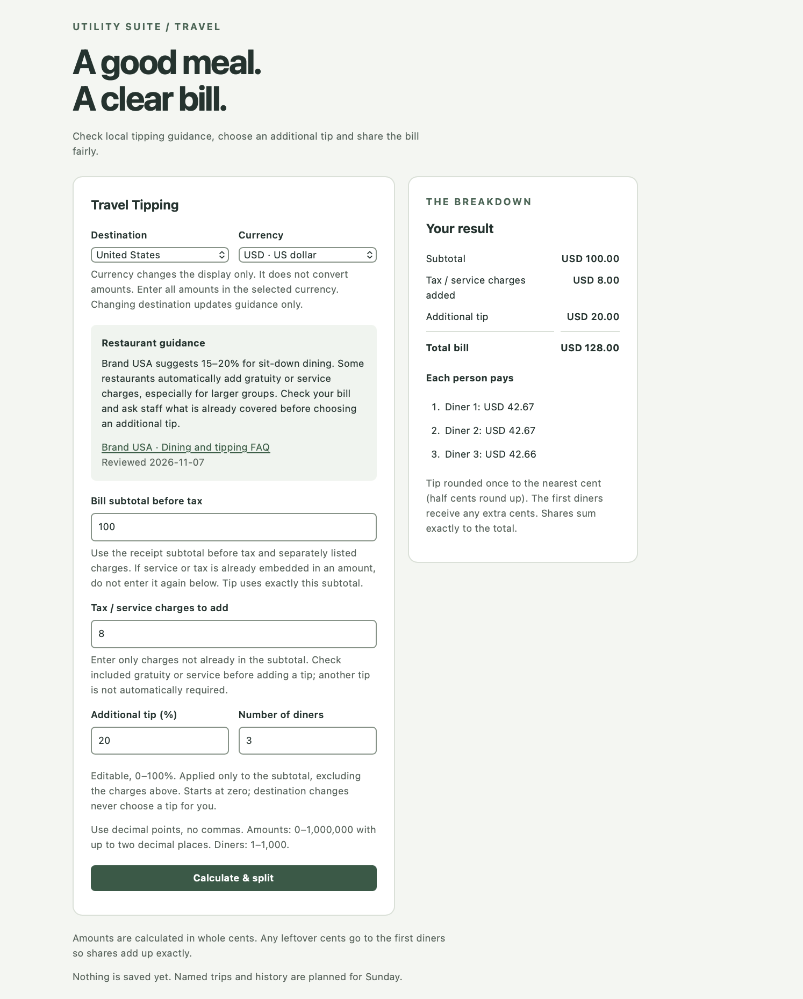

Build 1 due: Monday, November 9, 2026 at noon, New York time.
01 · Living product requirements
PRD version 1
The problem
My phone has a few built-in tools, but more specific tasks usually send me to another website or app. I often have to deal with ads, features I don't need, and uncertainty about what data the app collects. If I need the result later, I may have to do the calculation again.
The product
I want to bring useful everyday tools into one ad-free app with a consistent layout. Users will be able to pin favorites, choose preferred units and currency, and save selected results together. These are product goals; the full collection is not implemented.
First user
A classmate or friend planning an international trip who needs help calculating restaurant tips and splitting bills. A specific participant and testing session are pending.
Before
Search tipping customs, open a calculator, divide the bill and save a screenshot—or lose the result.
After · intended experience
Check the destination guidance, calculate and split the bill, save the result to a trip and find it again later.
One core workflow
Choose destination → calculate tip → split bill → save to trip → retrieve saved result.
Build 1 scope: Restaurant tipping guidance, additional tip calculation, equal bill splitting, explicit saving to a named trip and retrieval of saved results.
Three non-goals for Build 1
Accounts and cloud synchronization.
Payments, bank connections and receipt scanning.
The complete utility catalog and live currency conversion.
Riskiest assumption & architecture · preliminary
Travelers need guidance they can interpret correctly, especially when service is already included. Guidance sources have been reviewed, and automated checks cover additional tips, rounding and exact share totals. Builder checks are recorded below; external user validation is pending.
Planned flow: Destination guidance + bill inputs → tip and equal split calculation → result → explicit save to a named trip → retrieval. The local calculator uses HTML/CSS and JavaScript with Vite and Node’s built-in test runner. Saving and storage design remain pending; this Product Page is separate standalone HTML/CSS.
02 · Current implementation status
Tipping calculator implemented locally.
The local prototype provides destination guidance, an editable additional tip and an exact bill split. Named trips and saved history are not implemented yet.
Documentation completed: PRD v1, weekend plan, Monday submission checklist and this Product Page draft.
Implemented locally US, UK (London-based) and France guidance with sources and reviewed dates; USD/GBP/EUR display without conversion; editable additional tip and integer-cent bill splitting.
Planned · Sunday Named trips, explicit saving and retrieval of saved results/history.
Pending Full save/retrieve workflow and external user testing.
An earlier version of Utility Suite was built with my brother. This course project is new individual work. This course’s new individual work includes the documentation and local tipping calculator. Any earlier code or assets reused later will be identified explicitly.
03 · Product showcase
Prototype screenshot or GIF

Actual local calculator screenshot, November 7, 2026. A $100 subtotal + $8 charges + 20% additional tip produces a $128 total, split into $42.67, $42.67 and $42.66. Saved trips and history remain pending.
The app may remain local through Week 4. A cloud app link and two-minute video are planned for Build 5.
04 · Weekly build log
Build 1 · November 7–9
What works / what shipped
The tipping calculator is implemented locally: destination guidance, currency display, editable additional tip on the subtotal, validation and exact cent allocation. The screenshot above shows the working $128 example. Saved trips and history remain pending. The Product Page and prototype screenshot are published and verified at the public URL linked above; the calculator remains local.
Learning
This was my first time using Codex. I learned how to set up my GitHub repository, connect Codex to it and use Terminal to run the app locally. I also learned how to commit changes and push them to GitHub.
Working through one task at a time helped me understand the process. I gave Codex a specific request, reviewed its proposed changes and checked the result before moving on. I’m getting more comfortable explaining what I want to build, what should stay unchanged and how to check whether it works.
I also tested the calculator myself. I checked the bill split, tried an invalid number of diners and reviewed the layout in a smaller browser window. Splitting $128 between three people showed why rounding matters: two people pay $42.67 and one pays $42.66 so the shares add up correctly.
Changes / problems
The 55-utility vision is narrowed to one travel dining workflow for Build 1. Calculation uses integer cents and assigns remainder cents to the first diners so the shares sum exactly. Saving and retrieval remain Sunday’s work.
Builder manual checks
Jiwanjot checked the $100 subtotal + $8 charges + 20% tip example: $20 tip, $128 total and shares of $42.67, $42.67 and $42.66. He also checked zero-diner validation, successfully recalculated after correcting the input, and visually checked the form and results in a narrow browser window.
Automated verification
The actual implementation run passed all 27 tests with Node’s built-in test runner, including both required split examples and validation errors. The Vite production build and whitespace check passed.
Analytics setup
PostHog account created on November 7, 2026 using the Free plan. Analytics installation and event verification are planned for Build 2.
External user testing
Pending — builder checks are not external user testing. No outside participant observations or feedback have been recorded.
Actual build costs
Codex token usage and any associated cost have not been confirmed. I have not incurred any other project expenses.
Actual hours
Approximately 1.5 hours on Saturday, November 7, 2026.
Before Monday's noon submission
Finish and verify the core workflow; disclose anything unfinished.
Keep the prototype evidence and learning current; add external user observations and confirm Codex usage and cost when available.
Fill in builder details and verify attribution.
Push meaningful commits on at least two separate days outside class; recheck the published Product Page after updates.
Submit the Product Page and repository URLs in Icerynk; prepare the November 10 two-minute demo.
Later course milestones · all pending
Build 2 · Nov 16: Smallest local version, PRD v2 and documented setup. Week 1 account creation is complete: PostHog Free plan, November 7, 2026. Analytics installation on the Product Page and local app, and event verification, remain pending for Build 2.
Build 3 · Nov 23: Core workflow with real inputs and funnel events.
Build 4 · Nov 30: Choose Track A (10-case domain evaluation and one outside user review) or Track B (3–5 outside users, replay findings and fixes to the top three friction points). Update PRD v4 with evidence.
Build 5 · Dec 7: Cloud launch, secret checks, spend cap, tested two-minute rollback and two-minute video.
Sponsor memo · Dec 14: Recommendation backed by actual usage, full costs and risks.
All build deadlines are noon, New York time. Later build results and changes will be logged here as work occurs.
Economics & evidence snapshot
Time spent so far: approximately 1.5 hours. No other project expenses reported. Codex token usage and any associated cost remain unconfirmed. Cost per user run has not been measured. Analytics and external user evidence: pending. Builder manual checks and prototype evidence are recorded above. Week 6 sponsor recommendation: pending.
05 · Future roadmap
One useful workflow first. A broader suite over time.
Build 1: Tipping guidance, additional tip calculation and equal splitting are implemented locally. Saving to named trips and retrieving history remain pending.
Next: Currency conversion, including live conversion beyond Build 1.
Then: Favorites and personal preferences for units and currency.
Long term: The remaining utility groups in a 55-utility roadmap. Detailed group names and sequencing are pending.
Beyond the local calculator described above, roadmap features remain planned; dates and details may change.